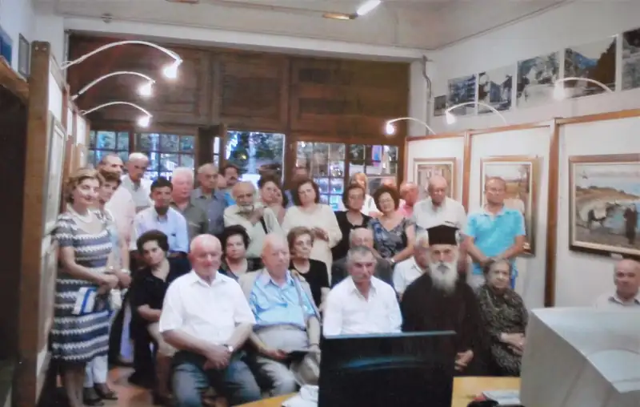
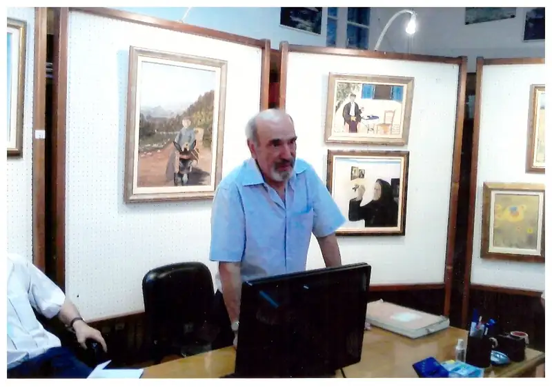
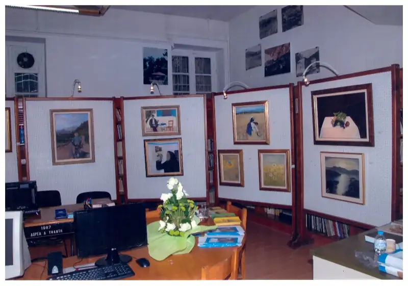
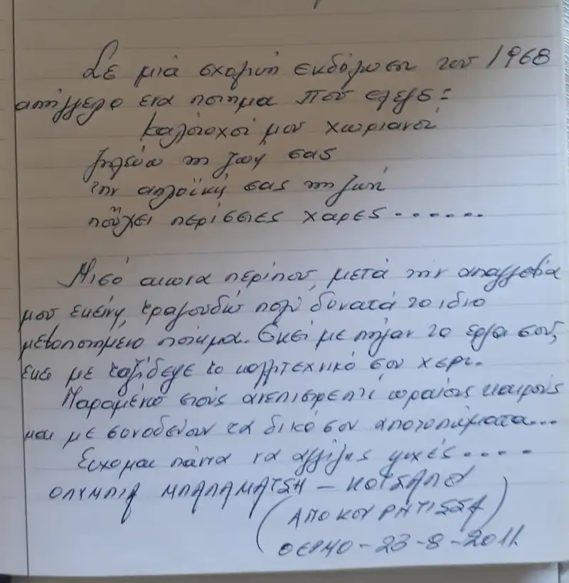

ΕΚΘΕΣΗ: ΘΕΡΜΟ (2011)
20 έως 27 Αυγούστου 2011
ΘΕΜΑ: "Περί όνου σκιάς"

Σχόλιο από τον Κώστα Μαρίνο για τον τίτλο της συλλογής "Περί όνου σκιάς"
Περί όνου σκιάς (για τη σκιά του γαϊδάρου), φράση που σημαίνει τη σοβαρή διαφωνία για ασήμαντα ζητήματα.
Από πού, όμως, προήλθε;
Η ιστορία ξεκινά απ' τη θρακική πόλη Άβδηρα. Οι Αβδηρίτες πρωταγωνιστούσαν στα ανέκδοτα της αρχαιότητας, (όπως οι Πόντιοι στα σημερινά), παρ' όλο που απ' την πόλη αυτή κατάγονταν αναλογικά οι περισσότεροι σοφοί: οι ατομικοί φιλόσοφοι Λεύκιππος και Δημόκριτος, ο φιλόσοφος Ανάξαρχος, ο σοφιστής Πρωταγόρας, ο ιστορικός Εκαταίος.
Λέει λοιπόν η ιστορία:
«Ο οδοντογιατρός Σκύλαξ, επειδή η γαϊδούρα του γέννησε πρόωρα, νοίκιασε άλλο γάιδαρο για να μεταβεί στη γειτονική Μαρώνεια. Ο ιδιοκτήτης του γαϊδάρου (ονόματι Άνθος), προχωρούσε πεζός, κρατώντας το ζώο από το σχοινί. Στο δρόμο, επειδή ο ήλιος έκαιγε, σταμάτησαν να ξεκουραστούν και άρχισαν να μαλώνουν διότι ο Άνθος, με το επιχείρημα, "σου νοίκιασα το ζώο, δεν σου νοίκιασα την σκιά του", δεν άφηνε το Σκύλακα να ξαπλώσει δωρεάν στη σκιά του γαϊδάρου.
Η υπόθεση έφτασε τάχα στο δικαστήριο, που όμως αδυνατούσε να βγάλει απόφαση και η πόλη διχάστηκε, διότι το ζήτημα απέκτησε προεκτάσεις που αφορούσαν και στα ακίνητα κ.λ.π.
Τελικά η μόνη απόφαση που πάρθηκε ήταν να θυσιαστεί ο γάιδαρος ως εξιλαστήριο θύμα. Στη συνέχεια λέγεται πως οι Αβδηρίτες ανήγειραν μνημείο εις ανάμνηση του γεγονότος»....
Το ανέκδοτο, βέβαια κυκλοφορούσε σε πολλές παραλλαγές, για διάφορους τόπους σαν το τραγούδι «του Κίτσου η μάνα». Κατά μία αθηναϊκή παραλλαγή, μιλούσε ο Δημοσθένης στην εκκλησία του Δήμου για σπουδαία Εθνικά ζητήματα, αλλά οι ακροατές δεν έδιναν καμιά προσοχή στα λεγόμενα του: Κουβέντιαζαν μεταξύ τους, άλλοι φούσκωναν ασκιά, κοιμούνταν, και κανένας δεν άκουγε. Ο Δημοσθένης ενοχλημένος σταμάτησε ξαφνικά να μιλά και άρχισε να τους λέει το ανέκδοτο. Όλοι άκουγαν με προσοχή. Σταμάτησε όμως πριν ολοκληρώσει την διήγηση. Τι έγινε παρακάτω; Πετάχτηκε σύσσωμο το ακροατήριο. Και ο Δημοσθένης: -Αλίμονο στην Αθήνα, που οι κάτοικοι της δείχνουν περισσότερο ενδιαφέρον για την σκιά του γαϊδάρου (περί της σκιάς του όνου) παρά για τα κρατικά προβλήματα. (Ήταν η εποχή των πολέμων με το Φίλιππο της Μακεδονίας, περί το 340 π.χ)
Κώστας Μαρίνος
(Από το φύλλο 97 του Δρυμώνα)

Ομιλία του Τάσου Μπουγά, Πανεπιστημιακού καθηγητή στα εγκαίνια της έκθεσης ζωγραφικής στο Θέρμο
Αιδεσιμώτατοι, Κύριε Δήμαρχε, κυρίες και Κύριοι
Έχω τη χαρά, στα αποψινά εγκαίνια της έκθεσης ζωγραφικής του Νώντα Ρεντζή, να σας απευθύνω μερικά λόγια προλογίζοντας το ιδιαίτερο αυτό γεγονός, και να σας προσκαλέσω να απολαύσετε τη δεξιοτεχνία του ζωγράφου.
Ως τα τελευταία χρόνια ξέραμε όλοι τον “δικό μας” Νώντα ως έναν έμπειρο και καταξιωμένο οδοντίατρο με τις προσωπικές του ευαισθησίες και τους ιδιαίτερους προβληματισμούς του που πήραν σάρκα και οστά υπό τη συγκεκριμένη μορφή της στράτευσης στους κοινωνικούς αγώνες, οι οποίοι σημάδεψαν τους κρίσιμους καιρούς της πρόσφατης ιστορίας μας.
Και ξαφνικά, απροσδόκητα κι απροειδοποίητα, ένας άλλος Νώντας εμφανίζεται μπροστά μας, ήδη έτοιμος για καινούργιες περιπέτειες σε άγνωστους ως τώρα κόσμους με την έμπειρη ματιά του επιδέξιου τεχνίτη που χειρίζεται με σιγουριά τον χρωστήρα και κινείται με άνεση στις αρμονίες των χρωμάτων. Ήταν πραγματικά μεγάλη η έκπληξή μου, όταν εδώ και μερικά χρόνια μου μίλησε για πρώτη φορά, στην αρχή συνεσταλμένα και διστακτικά - γιατί, παρά τα φαινόμενα, είναι εξ ιδιοσυγκρασίας ντροπαλός και μετριόφρων - για τους καινούργιους ορίζοντες και τις νέες του εμπειρίες και μου έδειξε κατόπιν με καμάρι τους πρώτους ολοκληρωμένους πίνακές του, όλους από την παλιά ζωή του χωριού και το φυσικό του περιβάλλον.
Έκτοτε συντελέστηκε πλήρως η μεταμόρφωση του Νώντα και το νεοανακαλυφθέν ταλέντο του πήρε τις πραγματικές του διαστάσεις.
Απανωτές εκθέσεις υπό συλλογική και ατομική μορφή με αφετηριακό ορμητήριο τον τόπο της καταγωγής του, τον Δρυμώνα, κι ύστερα όλο και πιο τολμηρά και απαιτητικά, σε γνωστές αίθουσες της Αθήνας, του Πειραιά και της Ναυπάκτου τράβηξαν το ενδιαφέρον των ανθρώπων της τέχνης και την εταστική ματιά των ειδημόνων του εικαστικού χώρου. Οι ως τώρα διατυπωθείσες αποτιμήσεις του έργου του Νώντα από τον κόσμο των επαϊόντων υπερβαίνουν τις προσδοκίες και προοιωνίζονται περαιτέρω θετικές εξελίξεις.
Σε τι συνίσταται η ιδιαιτερότητα της ζωγραφικής του Νώντα και ποια είναι τα κύρια χαρακτηριστικά της; Κατά την ετυμηγορία των τεχνοκριτικών και των ιστορικών της τέχνης, το είδος ζωγραφικής που καλλιεργεί ο Νώντας ανήκει στην κατηγορία της αποκληθείσας λαϊκής τέχνης (art naïf), όχι με τη μειωτική εκδοχή του άποιου και υποδεέστερου, του ελάσσοντος και κατά συνέπεια αμελητέας αξίας προϊόντος, αλλά με τη σημασία του αυθόρμητου και πηγαίου, του αγνού και αψιμυθίωτου, του λιτού και απέριττου που εκφράζει αυθεντικά τη λαϊκή ψυχή, κατ' αντιδιαστολή προς τους αυστηρούς κανόνες της λεγόμενης "ακαδημαϊκής" τέχνης και τους ακροβατισμούς της εκάστοτε επαναστατικής πρωτοπορίας (avant-garde). Ο λαϊκός ζωγράφος δεν διαθέτει τη θεωρητική υποδομή του καθιερωμένου τύπου καλλιτέχνη με εξαντλητικές σπουδές σε Σχολές Καλών Τεχνών και μακρόχρονη μαθητεία κοντά σε καταξιωμένους δασκάλους, ώσπου να σμιλευτεί σταδιακά η ιδιαιτερότητα της καλλιτεχνικής του φυσιογνωμίας, αντίθετα, είναι αυτοδίδακτος και δρα αυτόνομα και αυτεξούσια, αντλώντας τη δημιουργική του ρώμη από μια μυστηριώδη πηγή έμπνευσης που παίρνει τη μορφή έμφυτων δεξιοτήτων.
Παλιότερα μιλούσαν στις περιπτώσεις αυτές για "σφραγίδα" μιας ανεξιχνίαστης, κατά κανόνα θείας προέλευσης "δωρεάς" που νομιμοποιούσε τον κάτοχό της ως γνήσιο εκφραστή του πνεύματος και της καλλιτεχνικής δημιουργίας.
Θα αναφέρω μερικά χαρακτηριστικά παραδείγματα εγνωσμένης αξίας λαϊκής τέχνης, από τη διεθνή εικαστική σκηνή τον περίφημο Henri Rousseau τον αποκαλούμενο Douanier (τελώνη) (1844 - 1910), που έτυχε αναγνώρισης από προβεβλημένους εκπροσώπους της "επίσημης" ζωγραφικής (Delaunay, Picasso), και από τον ελληνικό χώρο τον λαϊκό ζωγράφο Θεόφιλο και τον συγγραφέα και νέο-βυζαντινής τεχνοτροπίας αγιογράφο και ζωγράφο Φώτη Κόντογλου, μοτίβα του οποίου επανευρίσκονται και υπό τον χρωστήρα του Γιάννη Τσαρούχη.
Σε ότι αφορά τη θεματική των έργων του Νώντα, δηλ. τα αντικείμενα που αναπαριστούν και ταυτόχρονα αναδημιουργούν οι πίνακές του (έμψυχο και άψυχο υλικό, τοπία, ανθρώπινες φυσιογνωμίες και δραστηριότητες, ατμοσφαιρικές και ιδιοσυγκρασιακές αποτυπώσεις της πραγματικότητας), η έμπνευσή του τροφοδοτείται κατά κύριο λόγο από την αγροτική ζωή στις ποικιλόμορφες εκφάνσεις της, πριν η ύπαιθρος αποψιλωθεί ολοκληρωτικά προς όφελος των συνεχώς διογκούμενων αστικών Κέντρων και μετατραπούν σε άσαρκα φαντάσματα τα άλλοτε σφύζοντα από ανθρώπινη παρουσία και ενεργητικότητα χωριά μας. Η ζωγραφική του Νώντα είναι ένας γεμάτος νοσταλγία πολυφωνικός ύμνος στη ζωή του ξωμάχου, που ανασύρει από τη λήθη με τη μαγεία της εικόνας μια καταποντισμένη Ατλαντίδα, εκείνη της εξιδανικευμένης διαβίωσής μας στην αγκαλιά της φύσης, όταν ενωτιζόμασταν τους παλμούς της γης στην εναλλαγή των εποχών και των συνακόλουθων αγροτικών δραστηριοτήτων. Μέσω της τέχνης του, ο Νώντας αυτονομιμοποιείται ως εκφραστής μιας ολόκληρης γενιάς, της δικής μας, της τελευταίας που είχε το προνόμιο να ζήσει οργανικά την ακόμα ανέπαφη κι ατόφια ζωή της υπαίθρου στη λιτή αυτάρκειά της και με τις καλές και κακές της όψεις. Μιλούμε γα την περίοδο των δύο περίπου δεκαετιών που ακολούθησε τη λήξη του Δεύτερου Παγκόσμιου Πολέμου.
Ας σημειωθεί εδώ παρενθετικά, ότι η αναπόληση και αναψηλάφηση αυτή ενός παρωχημένου κόσμου που αναδύεται αδρά από την αχλή του παρελθόντος μέσω της μετουσίωσής του σε αισθητικό γεγονός, επιχειρείται παράλληλα και σε δυο άλλους τομείς από τον καλλιτέχνη μας. Ο ένας είναι ο χώρος της γλώσσας, όπου ο Νώντας αποθησαυρίζει υπομονετικά την ιδιωματική "ντοπιολαλιά" της περιοχής μας, για να χρησιμοποιήσω έναν άκομψο και κακόηχο όρο που πέρασε ατυχώς στο ευρείας χρήσης λεξιλόγιο του καιρού μας. Η άλλη ατραπός αναδρομής στο παρελθόν και συντήρησης της φθίνουσας παράδοσης που επέλεξε ο Νώντας είναι η πιστή περιγραφή τοπικών ηθών και εθίμων και η λεπτομερειακή καταγραφή προ πολλού απορφανισθέντων επαγγελμάτων και επιτηδευμάτων με την τεχνική τους σκευή και τις εργασιακές τους διαδικασίες. Τα αποτελέσματα των διερευνήσεών του και στους δυο αυτούς τομείς, που εκτίθενται σε μια χυμώδη και ευρηματική γλώσσα, δημοσιεύονται τακτικά στα πληροφοριακά έντυπα των τοπικών Συλλόγων.
Ξαναγυρνώ στο κύριο αντικείμενο της αποψινής εκδήλωσης που είναι η παρουσίαση του εικαστικού έργου του Νώντα Ρεντζή, με μια συμβουλή στους φιλότεχνους επισκέπτες: Μην αποπειραθείτε να ζητήσετε από έναν καλλιτέχνη, του Νώντα μη εξαιρουμένου, να σας εξηγήσει το νόημα και τον σκοπό της δημιουργίας του, γιατί θα απογοητευτείτε. Δεν θα σας το πει, όχι γιατί δεν θέλει, επειδή ίσως επιθυμεί να κρατήσει απόρρητο τον αποκρυπτογραφικό κώδικα της τέχνης του σαν ένα καλοφυλαγμένο, "κατεσφραγισμένον σφραγίσιν επτά" μυστικό, αλλά απλούστατα γιατί δεν ξέρει, επειδή το προϊόν της τέχνης του δεν υπηρετεί κανένα νόημα και κανέναν στόχο. Η καλλιτεχνική δημιουργία δεν είναι αποκύημα νόησης, αλλά γέννημα βίωσης, δεν είναι αποτέλεσμα λογικών κατασκευών και διασκεπτικών διεργασιών, αλλά ξεχείλισμα ψυχής που τελεί υπό τη δυναστική εξουσία μιας Ιδιότυπης συγκινησιακής φόρτισης και πλησμονής εσωτερικών εμπειριών που ζητούν τη διέξοδο της εξωτερίκευσης μέσω του καλλιτέχνηματός. Από την άποψη αυτή, ο καλλιτέχνης εμφανίζεται περισσότερο ώς παθητικός δέκτης ανεξιχνίαστων δυνάμεων που τον χρησιμοποιούν ως ευπειθή φορέα και φερέφωνο παρά ως δρων υποκείμενο που πρώτα γεννά τον ονειρικό κόσμο της φαντασίας κι ύστερα τον τιθασεύει, υποβάλλοντάς τον στη μορφοποιούσα πειθαρχία της καλλιτεχνικής δημιουργίας. Στη συνάρτηση αυτή, θέλω να υπενθυμίσω τον περίφημο ορισμό της ποιητικής έμπνευσης που βρίσκεται στον πλατωνικό διάλογο Ίων:
"Οὐ πρότερον οἷος τε ποιεῖν [ὁ ποιητής] πριν ἄν ἔνθεός τε γένηται καί ἔχφρων καί ὁ νοῦς μηκέτι ἐν αὐτῷ ένη.. (ίων 5943) λέει ο Σωκράτης.
(Δεν είναι σε θέση να δημιουργήσει ο ποιητής, πριν δεχθεί τη θεία έμπνευση και περιέλθει σε κατάσταση αλλοφροσύνης, χάνοντας τον νου του).
Δύο και πλέον χιλιετηρίδες αργότερα, τα ίδια περίπου θα πει και ο Nietzsche, στη δική του γλώσσα, περιγράφοντας την εμπειρία της έμπνευσης, υπό το κράτος της οποίας συνέθεσε τον "Ζαρατούστρα":
"Έχει κανείς την αίσθηση", σημειώνει ο Nietzsche, "πως δεν είναι παρά ενσάρκωση, φερέφωνο, όργανο συντριπτικών δυνάμεων... «Ακούς, δεν ψάχνεις να βρεις, παίρνεις χωρίς να ρωτάς ποιος δίνει. Κάθε σκέψη γεννιέται σαν φεγγοβόλημα αστραπής, έτοιμη στην αναγκαιότητα της τελικής της μορφής – δεν είχα ποτέ την επιλογή». (Ecce homo)
Ας μου επιτραπεί μια τελευταία αναδρομή στο παρελθόν εις αναζήτηση βιωματικών εμπειριών που τροφοδότησαν την τέχνη. Αυτή την φορά θα ανατρέξω στη χριστιανική Δύση του αρχόμενου 5ου αιώνα, στη μεγάλη φυσιογνωμία του ιερού Αυγουστίνου (354 - 430) και το έξοχο αυτοβιογραφικό του έργο υπό τον τίτλο “Εξομολογήσεις” (Confessiones).
Διερωτάται εδώ ο επιφανής επίσκοπος της Ιππώνας για τη φύση του βιούμενου χρόνου που συνιστά την ουσία της επίγειας ζωής του ανθρώπου και δίνει την εξής απάντηση - σε ελεύθερη απόδοση:
“Τι είναι, λοιπόν, ο χρόνος ; Αν δεν με ρωτήσουν ξέρω. Αν με ρωτήσουν δεν ξέρω”. (ΧΙ, 14)
Αυτή ακριβώς είναι και η εμπειρία του καλλιτέχνη που αποτυπώνει στη ζωγραφιά, το ποίημα, το γλυπτό, τη μουσική σύνθεση, τον εσωτερικό του κόσμο δίνοντάς του υλική υπόσταση. Το καλλιτέχνημα είναι ένα είδος ιερογλυφικής γραφής, η αποκρυπτογράφηση της οποίας εναπόκειται στον εκάστοτε αποδέκτη του, θεατή ή ακροατή. Αν πρέπει να αναζητηθεί εδώ νόημα, αυτό είναι έργο του αποδέκτη, ο οποίος αναδεικνύεται σε σημασιοδοτούσα αρχή του καλλιτέχνηματος, στον βαθμό που ανακαλύπτει και οικειοποιείται μια μυστηριώδη αντιστοίχιση και διαπίδυση ανάμεσα στο έργο τέχνης και τον βιωματικό του κόσμο. Το νόημα είναι η συνάντηση δύο υποκειμενικοτήτων, του καλλιτέχνη και του αποδέκτη του έργου του, με τη διαμεσολάβηση της καλλιτεχνικής δημιουργίας. Η συνάντηση αυτή είναι η πεμπτουσία του βιώματος που αποκαλούμε αισθητική συγκίνηση.
Δυο λόγια για τον τίτλο της έκθεσης που επέλεξε ο Καλλιτέχνης: "Περί όνου σκιάς". Πρόκειται για μια παροιμιώδη ρήση με διαχρονική χρήση απο την αρχαιότητα ως τις μέρες μας και με αναλλοίωτη δια μέσου των αιώνων τη σημασία της: φιλονικία για ασήμαντα και ανάξια λόγου πράγματα ή, στη διατύπωση του αρχαίου ορισμού: "Παροιμία περί των ενδιατριβόντων τοις μηδενός αξίοις".
Όπως είναι γνωστό, το γαϊδουράκι ήταν ανέκαθεν ένας αναντικατάστατος παράγοντας της αγροτικής οικονομίας και των πολύμορφων δραστηριοτήτων της υπαίθρου, εξ ου και η τιμητική του παρουσία στους πίνακες του Νώντα. Θα ριψοκινδυνεύσω μερικές υποθέσεις για την πρωτότυπη επιλογή του ζωγράφου κι ας παραβλέψει ο ίδιος πιθανές αστοχίες μου. Η ερμηνευτική μου προσπάθεια αρχίζει με τη σκωπτική και φιλοπαίγμονα διάθεση του Νώντα, που αποτελεί απαραγνώριστο στοιχείο της ιδιοσυγκρασίας του (πρώτη υπόθεση), περνά από την εγνωσμένη σεμνότητα και μετριοφροσύνη του καλλιτέχνη που αδικεί τον εαυτό του, αν υποτιμά την προσφορά του (δεύτερη υπόθεση) και τελειώνει με την υπαινικτική αναφορά στην τραγικότητα της ιστορικής μας συγκυρίας, όπου αναδεικνύεται συχνά το ασήμαντο και επουσιώδες εις βάρος του κατ’ εξοχήν σημαντικού και ουσιώδους (τρίτη υπόθεση).
Ποιος είπε, πως οι άνθρωποι του πνεύματος και της τέχνης δεν διαθέτουν πολιτικές και κοινωνικές ευαισθησίες και δεν λειτουργούν σε καίριες στιγμές της ιστορικής μας διαδρομής ως εκπληκτικής ακρίβειας σεισμογράφοι της επικαιρότητας;
Θέλω να συγχαρώ με ιδιαίτερη θέρμη τον Νώντα για τον υπέροχο άθλο της καλλιτεχνικής του δημιουργίας και να του ευχηθώ εκ βάθους ψυχής εύχυμη την καρποφορία της καινούργιας αποστολής του, για να μας χαρίζει γενναιόδωρα με τη μαγεία των χρωμάτων την απαράμιλλη ομορφιά του κόσμου.
Τάσος Μπουγάς


